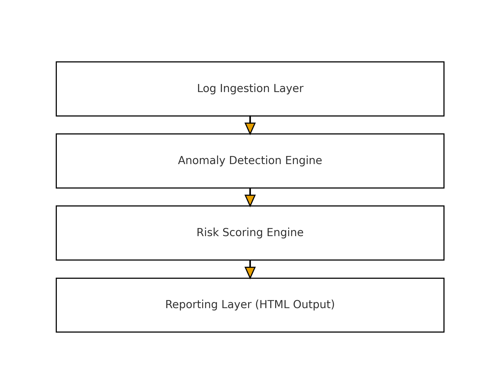
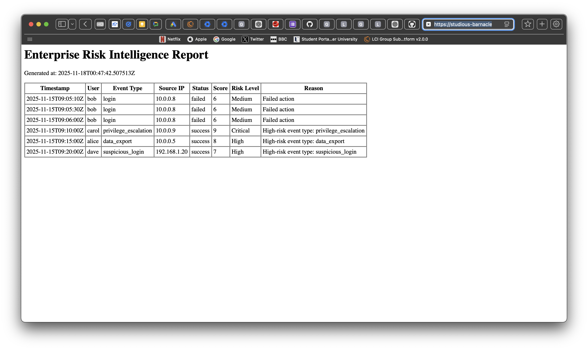

Building intelligent risk and immigration systems for the modern digital economy.
I am an AI/ML engineer and technology leader with experience across healthcare, education, and
financial risk environments. My work spans enterprise cybersecurity, intelligent risk scoring,
data-driven decision systems, and digital transformation of NxtAbroad’s education and immigration
operations.
This portfolio consolidates the projects and evidence supporting my application for the
UK Global Talent Visa in Digital Technology, including enterprise-grade risk engines, ML projects,
and large-scale operational systems.
Global Talent (Tech Nation) Focus
Enterprise Technology Risk
Machine Learning & Data Engineering
Digital Transformation (NxtAbroad)
Recent Highlights
- Designed and implemented an Enterprise Risk Intelligence Engine for anomaly detection and KRI-based scoring.
- Built Twitter Topic Classification ML pipelines and research around thematic insights.
- Led NxtAbroad’s digital transformation and AI-backed service systems.
- Contributed to Cyber Essentials certification and cybersecurity hardening in a regulated environment.
An AI-powered technology risk and threat detection engine that ingests enterprise system logs,
detects anomalies using expert-defined KRIs, scores events, and generates structured risk intelligence reports.
Built collaboratively with a Senior Technology Risk Analyst at CME Group.
Overview
What the system does
The engine ingests authentication, privilege, network, and application events; detects high-risk
patterns; applies a KRI-based scoring model (1–10); and classifies events as Low, Medium, High,
or Critical risk. It then produces an HTML-based risk report tailored for Technology Risk and
Security teams.
Built with Python, modular architecture, KRI-driven risk logic and enterprise reporting patterns.
My Role
Technical leadership and implementation
I designed the system architecture, built the anomaly detection engine, implemented the KRI-based
scoring model, and developed the reporting layer. I also led the integration of enterprise Technology
Risk inputs into the model under the guidance of a Senior Technology Risk Analyst.
- Full architecture, design and implementation.
- KRI framework encoded directly into scoring logic.
- Automated generation of risk intelligence reports.
Architecture Diagram
The engine is structured into four main layers: log ingestion, anomaly detection, risk scoring, and
reporting. This separation supports scalability, unit testing, and future ML model upgrades.

File: images/enterprise_risk_architecture.png
Sample Risk Report Output
A sample HTML report presents a sortable table of anomalies, risk scores, levels, and reasons.
This mirrors internal risk dashboards used by Technology Risk functions.

File: images/enterprise_risk_report.png
In addition to the Enterprise Risk Intelligence Engine, I have delivered other projects that demonstrate
ML capability, digital transformation leadership, and cybersecurity impact.
Machine Learning · NLP
Twitter Topic Classifier
A machine learning pipeline to classify Twitter content into thematic categories such as politics, sport,
entertainment and more. Built as part of my academic and applied research, the project demonstrates
end-to-end ML engineering, feature extraction, model selection, and evaluation.
Techniques: text preprocessing, feature engineering, classifier comparison, evaluation metrics.
Digital Transformation · Applied AI
NxtAbroad AI and Digital Transformation
Led the design and implementation of data-driven processes at NxtAbroad, covering client onboarding,
case tracking, and decision-support tools for study abroad and immigration flows. The work includes
CRM process design, automation, and the foundations for AI-assisted advisory systems.
Demonstrates leadership in transforming a growing consultancy into a technology-enabled platform.
Cybersecurity · Governance
Cyber Essentials Certification Contribution
Participated in the technical preparation and implementation of controls towards Cyber Essentials
certification in a regulated environment. Responsibilities included hardening systems, reviewing policies,
and supporting the implementation of secure configurations and access controls.
Evidence of cybersecurity competence and contribution to formal certification activities.
Centralised access to the documents and outputs submitted as part of my Global Talent endorsement application.
Documents are structured to match Tech Nation guidance for mandatory and optional evidence.
Mandatory Evidence 1 – Enterprise Risk Intelligence Engine
Full 12–15 page KPMG-standard evidence report, including architecture, code descriptions, expert collaboration,
and sample outputs.
Download Evidence PDF
Mandatory Evidence 2 – Twitter Topic Classifier (ML)
Technical evidence covering model design, evaluation, repository structure and relevance to product and
data-centric ML systems.
Download Evidence PDF
Mandatory Evidence 3 – NxtAbroad AI & Digital Transformation
Evidence of leadership and innovation transforming NxtAbroad into a scalable, tech-enabled education and
immigration consultancy.
Download Evidence PDF
Optional Evidence – Cyber Essentials Contribution
Documented contribution to Cyber Essentials certification and secure system design in a regulated setting.
Download Evidence PDF
Optional Evidence – GitHub and Open-Source Activity
Summary of public repositories, contributions, and engineering activity on GitHub relevant to the UK
digital technology ecosystem.
Download Evidence PDF
This section automatically pulls my latest public repositories from GitHub to demonstrate ongoing engineering
work and technical activity.
Loading latest repositories from GitHub…
A complete CV summarising my experience across AI/ML engineering, cybersecurity, technology risk, and digital
transformation is available for download.